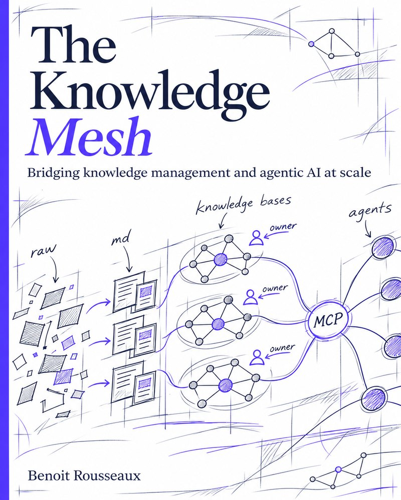

Version 2.5 · 16 November 2026
The Knowledge Mesh
Bridging knowledge management and agentic AI at scale
If only the company knew what it knows. A playbook to bring the right knowledge, in the right shape, to the right place at the right time, for people and AI agents alike.
AI-generated audio overviews of the playbook, made with Google NotebookLM.
PDF only · playbook 2.1 MB (also text only) · slides 1.6 MB · or read the playbook and the slides online
- Chapters
- 9
- Annotated sources
- 21
- Figures & tables
- 6 · 13
- Format
- PDF 30 pages
Why this playbook
“If only HP knew what HP knows.”
This line, attributed to Lew Platt in the 1990s, has lost none of its relevance. It matters even more today with AI agents. And by agents, we mean real agents, not mere assistants: systems that act, make decisions and commit the organisation at scale, with a real impact on value creation.
On paper, projects are well framed and teams are on board. Yet when it comes to scaling, things stall. An expert prompt and RAG over a pile of documents are not enough. After prompt engineering, context engineering is becoming the real new lever: to act with accuracy, an agent needs the right knowledge, in the right shape, in the right place, at the right time. And that depends on what the company truly knows, not on what it has let accumulate.
The brake is not so much technological as organisational. It calls for treating knowledge as a real asset, on a par with data.
This playbook sets out concrete landmarks around the Knowledge Mesh. It draws on two major inspirations: Zhamak Dehghani’s Data Mesh, to decentralise responsibility by domain rather than centralise everything; and Andrej Karpathy’s approach to knowledge compiled upstream, a living wiki maintained with a human in the loop rather than reassembled at every question.
No magic recipe here, just a few landmarks to help in the quest for AI at scale and with impact.